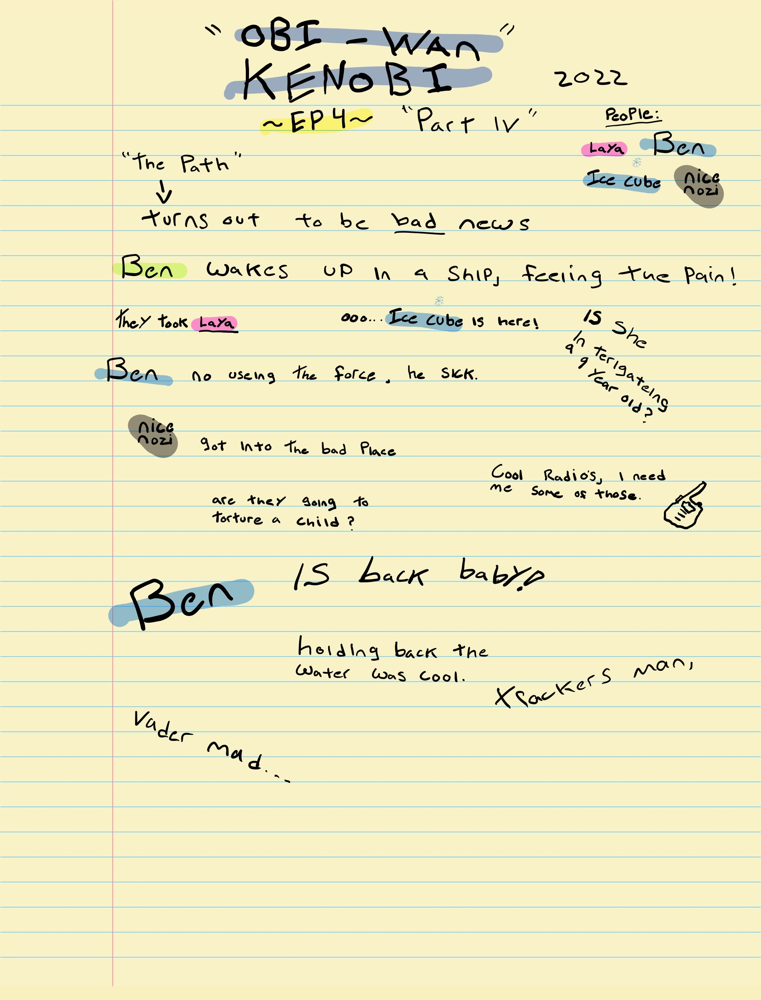
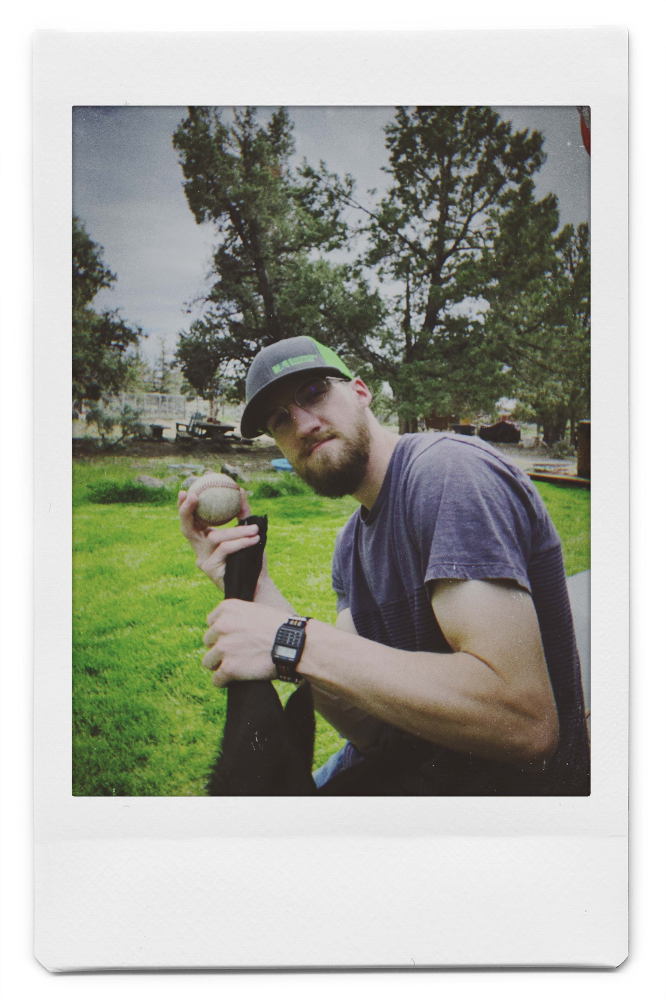

2022
Well, this hits my childhood excitement like I haven’t felt in a while!
Disney just released Obi-Wan Kenobi, a spinoff show from the main canon films, it starts basically where the Revenge Of The Sith left off, (Star Wars #3).
It just made me smile when I turned this on, from the same music, the same actors, everything is perfectly in its place from where I wanted it when I finished Revenge Of The Sith all those years ago. (Other than the unrealism like Laya running away? I mean come on.)
So for the fans, watch it with a child’s eye, and you’ll love it! Just be happy they are showing more of the universe and it’s a very interesting time in the Star Wars canon.
For the people that haven’t gotten into Star Wars yet,
Don’t start here! You are in a glorious position right now with the whole Star Wars universe laying, ready to be loved and hated right in front of you. Embrace your inner child, like running up to the evening fire there in your small village, finding a spot in the crowded small area, sitting down eagerly next to your young peers, to hear the past stories from an elder.
Treat Star Wars like that, come home from work, grab a snack and a drink, and watch an hour or so a night, and let the story take you on a journey, don’t think of how that or this is not possible, because the fact is, you’re right, and who cares…
That isn’t meant to be insulting, it’s meant to be inspiring to let your inner child out, we as adults do not let ourselves do that enough these days, and I say whether you’re a fan now or a future fan, let OBI-WAN KENOBI be that catalyst for joy.
Thank you for your time,
Jacob
*Spoiler Warning*

P.S. Westley and I broke our catch record this week (803)!

Last week, I talked about how the internet works. Clients make requests to servers and servers respond to those requests. Today, let’s go deeper into how programs and computers can talk to each other: APIs.
Back when computers were just starting out, the companies producing them built everything for that computer (the hardware, the chips, the software) and that one company put all of these together to make it work. Since computers became ultra popular, it opened up the market such that entire companies could be formed around building each of these components: Intel makes chips, Apple provides low-level software and hardware, and there are thousands of companies that build applications (Facebook, Chrome, Discord, etc.). We now have so many different applications and they all need to connect so that they can be useful to us.
This is where Application Programming Interfaces (APIs) come in. APIs act as an interface between different applications and allow them to get information from and communicate with one another. Let’s start with an analogy.
If you wanted to start a company that builds houses, you wouldn’t build everything from scratch. You would have to go chop trees, make them into boards, forge nails, build all the cabinets, deal with the circuitry that goes into an oven. But there are specialized companies out there that can do all of those individual tasks so much better than you. These individual companies have a competitive advantage over your company in each of those tasks. Yes, your company can build a full house from scratch but your cabinets won’t be better than Cabinets ‘R Us LLC and your couches won’t beat Great Seating Inc. You would be building shitty houses that nobody would buy and you would be bankrupt in no time.
A better business model would be to pay those other companies that are good at those individual tasks to do them for you at a lower cost. You pay Cabinets ‘R Us and Great Seating to build the components for a house. Your job then becomes stitching all these pieces together into a functional dwelling.
This is exactly what APIs allow for in the virtual realm. APIs create specialization and competitive advantage. Companies can really perfect a specific service and offer it as an API for other applications to use. Stripe has an API for payment processing. FedEx has an API for logistics and shipping. NOAA has an API for weather information. When a developer is making an application, their job isn’t to build everything from scratch. A developer’s job is to stitch APIs together into a functional application.
Let’s say I start an online business and I want to have some way to collect payments online. I could spend weeks or months trying to code a payment system from scratch. It probably wouldn’t look good and would have bugs and I would need to constantly maintain it along with my other business functions. I could also hire a very expensive and specific developer to take care of that for me.
But there are companies out there that are really good at processing payments. Why not just pay a specialized company to do it for me at a lower cost? Stripe has a full suite of payment infrastructure with a fully featured API that I can tie into my application so the two can talk to one another. With this, when someone makes a purchase, I just point that information to the Stripe API and it is taken care of. I don’t have to write hundreds of lines of code, it’s reliable, and there is no maintenance on my end. All I have to do is stitch my application and the Stripe API together.
Later on, I might want to include shipping time estimates so customers know roughly when their shipment will arrive. Again, I could spend months making some kind of shipping model to estimate a shipping time. But why not just bolt on the FedEx API that already has that information? My application would ask the FedEx API for a shipping estimate and I could provide that information to the customer.
These are just a few examples of all of the possiblities that APIs have opened up. Developers can now spend less time reinventing the wheel and more time innovating. APIs have allowed really unique applications to be built with speed and quality never before seen while opening the door for companies to specialize. All of the software startups in Silicon Valley have APIs to thank for that.
I have the honor to be Your Obedient Servant,
Westley